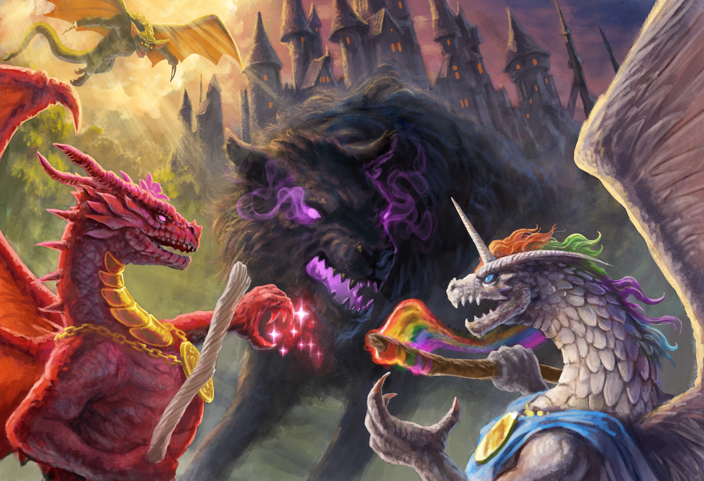

|
仙境之旅虽让我对仙灵龙的栖息环境有了深刻的认识，但我也同样力求深入剖析他们在战斗中的交锋之道。在整个旅程中，我未曾与任何一条仙灵龙爆发正面恶战，这或许算是一桩幸事，但其副作用则是我没能以最直观的方式亲身领教那些高超技艺。 尽管如此，我仍从我的永光天角龙挚友卡凯恩那里搜集到了大量精彩战例――他在举行永恒之光仪式后，因仪式引发的后果而从居住过一段时日的仙境迁往凡间位面，并在随后的冒险生涯中持续往返于两界之间。 为何要向卡凯恩请教？首先，他此前为我提供的有关仙境的情报精准无比、细节详实，极大地充实了我浩繁的札记与档案。此外，要在仙境中寻获他的踪迹竟出奇地简单――要知道，在这片变幻莫测的国度里，找人可从来不是一件有把握的事。但更重要的是，他从一条永光天角龙的视角为我提供了珍贵见解，而这恰恰是我在仙境开展文化采风时最为匮乏的一环。游历期间，我虽与好几条极具魅力、见解独到的仙灵龙促膝长谈过，但他们无一例外全是传统派巨龙，这自然令我从他们口中获知的信息带有某种特定的倾向性。倒不是说永光龙就没有自己的偏见，只是在历经永恒之光仪式之后，巨龙眼中的世界以及与世界互动的方式都会呈现出截然不同的视角――而这正是我苦苦寻觅的视角。 于是，我请卡凯恩为我详述永光天角龙的种种能力，而事实证明，他的回答再一次超出了我的预期。他在过往岁月中曾与形形色色的其他永光仙灵龙并肩作战过――令人惊讶的是，其中甚至包括一条诡谑龙！借由那次通力合作，他对各类永光仙灵龙在战场内外所展现的本领都有了相当透彻的洞察。 一如既往，我带着审慎怀疑的态度倾听了他的讲述；每一条永光龙都各不相同，无论是仪式本身产生的具体效应，还是此后魔力在巨龙体内的成长轨迹皆有差异。不过，我仍将在下文中为你简要梳理他与其他几位永光仙灵龙的那场邂逅及随后的同行经历。 猎杀暗影巨狼在凡间世界里，狼通常是谨慎而善抓战机的猎手。它们专挑最孱弱的猎物下手，因此巨龙――哪怕只是刚破壳的幼雏――也绝不在它们的食谱之上。然而，有些野狼却胆敢猎杀凡人孩童，促使父母们向儿女绘声绘色地讲述“大恶狼”的恐怖故事，借以警醒孩童、防止他们在夜间擅闯林地。久而久之，这些凡间故事反过来塑造了仙境中的狼群，将它们化作了名副其实的恐怖梦魇。 卡凯恩便是在此时登场――当时他正与一位同为永光龙的魅心龙搭档合作，受当地某座王庭悬赏重金，追猎这样一头从童话故事中诞生的恶狼。两条巨龙一路追踪那头怪物穿过荒凉的沼原，继而深入幽暗森林，一直追到了一座阴森不祥的古堡前。这座城堡一直都在这里吗？它与那头恶狼又有着怎样的关联？卡凯恩当即想要上前一探究竟。 然而那头恶狼真如传说中一般狡猾奸诈，它利用古堡作为诱饵分散注意力，自己则顺着足迹绕回后方，反过来潜行追猎起两名猎手。就在卡凯恩驻足思索这座神秘建筑的来历之时，恶狼骤然发动突袭，双眸中闪烁着缕缕紫色能量幽光。 这头暗影巨狼是不折不扣的怪物。仙境孕育出的这个强敌本该远远超出他们二人所能应付的极限，所幸卡凯恩的灵光护住了他们，抵御了巨狼身上散发出的那股最可怕的原始恐惧灵光。两条巨龙迅速喷吐出各自的吐息：卡凯恩璀璨夺目的光束削弱了巨狼的暗影躯体，而他的魅心龙同伴喷出的馥郁吐息则扰乱了巨狼的平衡。巨狼凶狠地撕咬卡凯恩，他当即挥角迎击。万幸的是，天角龙的龙角足以刺穿如暗影巨狼这般由迷雾与暗影构成的生物――除非它在发动攻击的瞬间主动凝为实体，否则平时根本没有物质形体。双方你来我往激战不休，魅心龙不断施展法术保护卡凯恩，并抚平他们二人的心神创痛与肉体伤势。 然而，仅凭这些依然难以招架巨狼的凶残狂暴与连绵猛攻。当魅心龙孤注一掷地释出最后一道法术，而卡凯恩则以绚烂的虹彩能量护住手中法杖之时，巨狼眼看就要张开血盆大口向卡凯恩咬下致命一击。就在这千钧一发之际，两条巨龙猛然瞥见巨狼身后潜伏着一道身影――竟是一条诡谑龙！对方是巨狼的帮凶？还是这座古堡的主人？卡凯恩二人哪怕二打一也仅有微弱胜算，如今局势眼看就要向有利于巨狼的方向彻底倾斜。 然而……事情并非表面看起来那样！那条诡谑龙猛然俯冲而下，朝着巨狼喷出一大口强酸。巨狼本能地向后退缩以躲避这突如其来的新威胁，却不慎一脚踏进了诡谑龙事先巧妙布设的聚光陷阱之中。巨狼痛苦地惨嚎起来，再也无力给卡凯恩补上致命一击。 无论在战斗中还是在人生的诸多事务里，时机都是决定成败的关键，此战亦不例外。那决定性的一瞬无疑扭转了生死天平――卡凯恩的小队得以借由魔法从重伤中恢复过来，重整旗鼓发起全力猛攻。随着诡谑龙在强敌身后灵活穿梭、与卡凯恩形成夹击之势，这三位意想不到的盟友毫不费力地彻底解决了那头暗影巨狼。 战后，他们花了一番工夫与那条诡谑龙交谈商议――巧合的是，对方竟然也是一条永光龙！他原本盘算着独自设伏击败巨狼，交手后才意识到这头怪物的凶险程度远超预期。经过简短商议，三条巨龙一致同意平分这项委托的悬赏报酬。 这便是由三条强大的永光仙灵龙所组成的奇妙团队初次相逢的始末！在卡凯恩口中，这段故事原本还要更长、细节也更为详尽；借助当时记下的大量笔记，我不仅洞悉了有关永光仙灵龙的好几桩秘辛，还成功印证了自己的数项假说。在随本篇导言一并附上的手记中，我已竭尽所能将这些情报加以系统整理与量化呈现。但愿这些成果能为日后的其他学者提供参考，助我们将这一领域的学识打磨得愈发精深完善。 而倘若你正是一条在犹豫是否要追寻永恒之光仪式的仙灵龙，不妨让接下来的篇章成为你的灵感源泉！这便是你未来可能成为的模样；只要你肯为之奋力拼搏，所有这些强大的能力都将向你敞开大门。当然了，亲爱的读者，一旦你有朝一日成为声名远扬、令各地巨龙艳羡不已的永光龙英雄，我由衷希望你能在百忙之中抽空记起你的老朋友卡利赞德雷克斯――正是他为你提供了迈向成功的蓝图。届时若能获得对你的一场独家专访，世上便再没有什么事能让我更欣喜若狂了！ ――永光贤者卡利赞德雷克斯 化身巨龙！ |
 仙灵龙战术与技艺 |